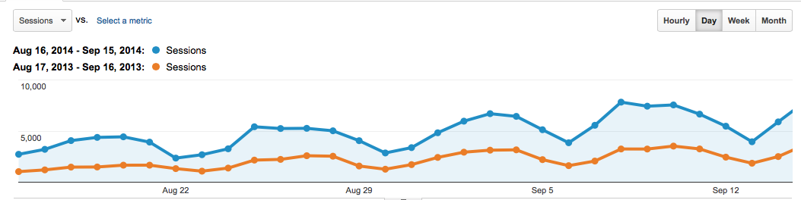

Runestone Fall 2014
School is underway again, and now that we are a few weeks in to the semester I wanted to take a minute to talk about growth. Last year about this time things were still pretty chaotic, with the unexpected success of the books the servers were laboring intensely to keep up with all of the new users. This necessitated a weekend switch to a larger server.
Growth
This year, Google Analytics is showing that our daily traffic has doubled from last fall! Here's a comparison to a year ago, adjusting for the days of the week to be the same. Its amazing how consistent the weekly pattern is.
Code Coach
One of the new features in our 3.x release is the Code Coach. You have probably noticed that button in some exercises, or some of the examples. Code Coach is in its very early stages as a platform for providing students with intelligent automated feedback on their code. I think this has huge potential, but is going to require a lot of resources to bring to fruition. Right now there are two things going on that I think do add value:
- Every time the student presses the run button that version of the code is saved. Code Coach lets a student move backward and forward through their history to view the differences between one version of the code and the next. I can see this as a very valuable teaching tool for an instructor to use with the student. I've looked at a bunch of these and its amazing how often a student gets off in the weeds over a very simple project and ends up throwing away a huge amount of work, or just making random changes. I would really like to have the conversation where I can show the student, if you would have fixed this, you would not have had to delete all of this other stuff.
- Everytime the student runs a program, I run Pylint on it in the background. Pylint catches all sorts of "errors" that do not show up as Python runtime errors. One big one is forgetting parentheses. I've seen this so many times: myTurtle.forward this is not a runtime error because Python evaluates the statement to simply be a reference to a function. But the student can't see it. "Dr. Miller, I don't get any errors, but my turtle isn't doing anything, what am I doing wrong?" Pylint flags this for the useless statement that it is.
I'm really looking forward to applying much more advanced analysis to the code in order to provide better coaching.
Comments